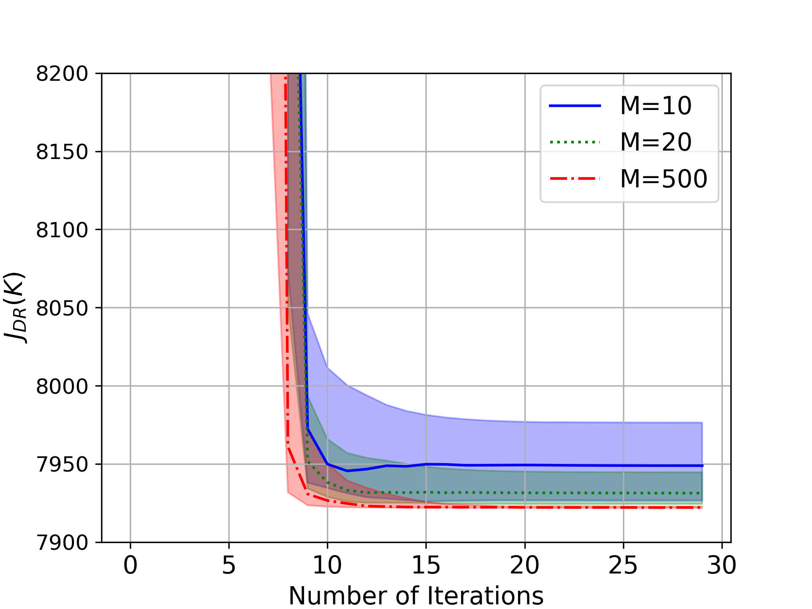
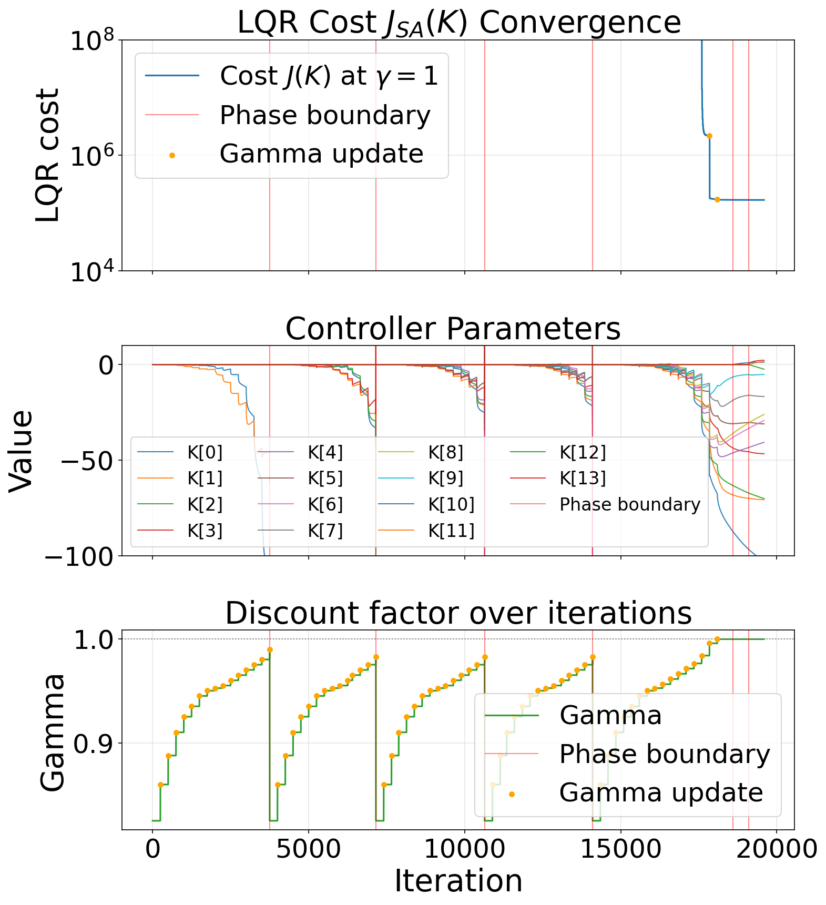
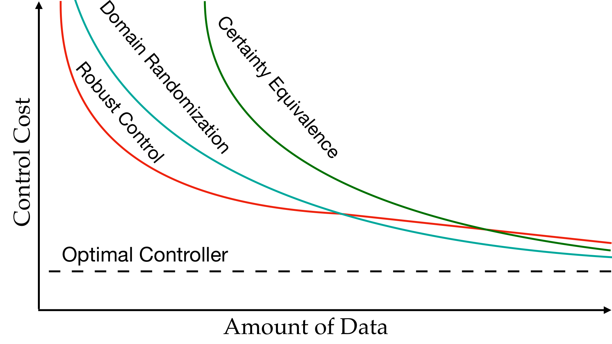

Tesshu Fujinami
University of Pennsylvania, PhD Student
Simplicity is prerequisite for reliability.
Research
My goal is to bridge the gap between robot learning in practice and theory of learning for control, toward control systems that are reliable, robust, and adaptable. My interests lie at the intersection of control theory, reinforcement learning, and policy optimization.
Publications
- University of Pennsylvania: Domain Randomization theory for LQR
- University of Tokyo: Autonomous Drone Control
- Extracurricular: Autonomous Car Racing
University of Pennsylvania
-
Robust in Training, Adaptable at Deployment: Lessons from Domain-Randomized LQR
Sim2Real2Field Workshop, Conference on Robot Learning (CoRL), 2026

Broader randomization speeds adaptation and reduces forgetting, but makes optimization harder, and faster adaptation itself trades off against forgetting. -
Policy Gradient for LQR with Domain Randomization
IEEE Conference on Decision and Control (CDC), 2025

Policy gradient provably converges on the domain-randomized LQR objective. Sampling more systems (larger M) brings the solution closer to the true randomized cost. -
Policy Gradient over History-Dependent Policy Classes for LQR with Domain Randomization
IEEE Conference on Decision and Control (CDC), 2026

Growing the controller’s memory one phase at a time, while annealing the discount factor to 1, lets policy gradient stabilize system collections that no static feedback gain can. -
Domain Randomization is Sample Efficient for Linear Quadratic Control
Learning for Dynamics and Control Conference (L4DC), 2025
Oral presentation (16/120)

With little data, domain randomization beats certainty equivalence. As data grows, it matches certainty equivalence’s optimal rate, while robust control stays safe but becomes conservative.
University of Tokyo
-
Gaussian Process-based Visual Pursuit Control with Automatic Gain Tuning
IEEE Conference on Control Technology and Applications (CCTA), 2022
-
A Control Barrier Function Approach for Observer-based Visually Safe Pursuit Control with Spherical Obstacles
IFAC World Congress, 2023
-
Visual Pursuit with Switched Motion Estimation and Rigid Body Gaussian Processes
Transactions of the Institute of Systems, Control and Information Engineers, 2023
Best paper award
-
Visual Safety of Robot Networks based on Control Barrier Functions with Spherical Obstacles
SICE Annual Conference, 2023
-
Distributed Gaussian Process Based Cooperative Visual Pursuit Control for Drone Networks
IFAC Symposium on Mechatronic Systems, 2022
Extracurricular
F1TENTH (RoboRacer) Autonomous Racing
5th place at Autonomous Grand Prix in ICRA 2024